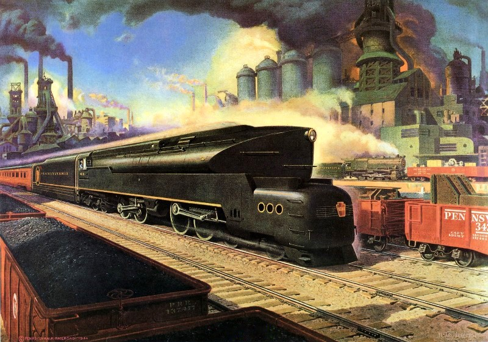

In the final months of the second world war, the "Pennsy" was at its greatest height before eventual postwar decline brought on by highways and airlines.
The CT1000, an important internal document, covers the locations of stations, facilities, and customers across the company's vast network that stretched from New York, Washington, Chicago, and Saint Louis as part of the world's largest transportation company.
